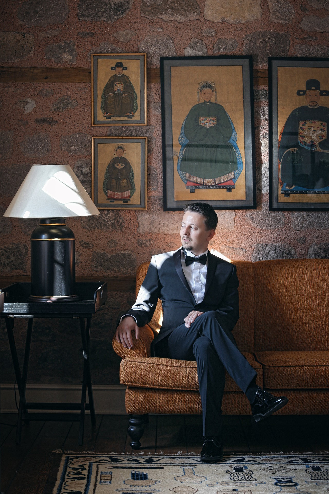
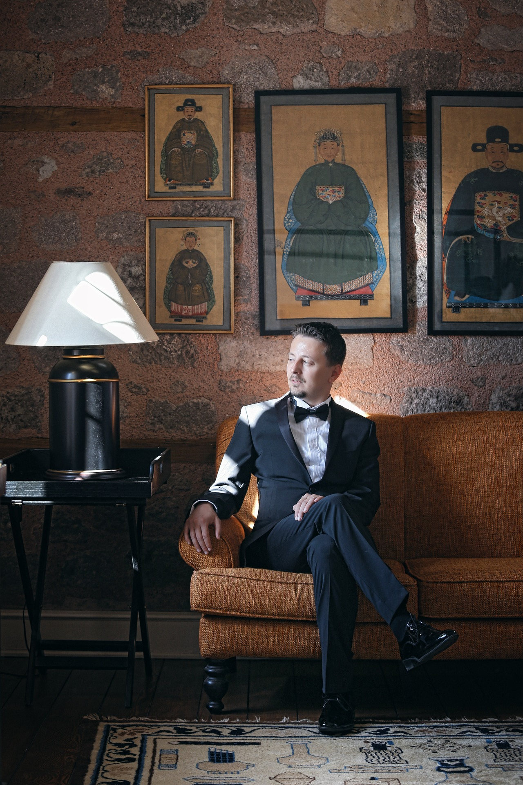

OUR VISIONARIES
We believe that our success is driven by the talented individuals who make up our team.
Our diverse and passionate employees bring a wealth of experience and expertise to the table,
ensuring that we consistently deliver top products and services to our valued clients.


 
